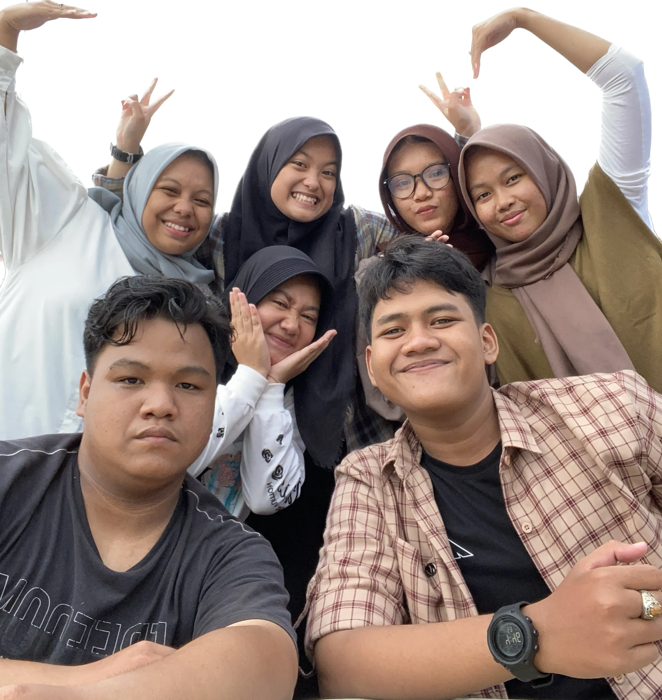

Chapter 1


Cerita ini berawal dari Rizky, Bimo,
Alwan,
Iqro,
Ibnu, Aqila, Bilqis dan Sarah yang di tempatkan oleh SMK Al-Irsyad untuk PKL
di kantor, saat itu mas Alvin menjadi pembimbingnya, Mereka ber-8 belajar menjadi tim Software
Development, dari mulai yang belajar UI/UX, Front End, sampai Back End.
Kedekatan kami berawal dari Alwan yang sudah matang join ke ruangan kami untuk kerja sama dalam
membuat project.
Tidak berselang lama, Iqro, Ibnu, Bilqis, Aqila, Sarah, Rizky, dan Bimo ikut andil dalam
mendevelop
project yang ada, dari sini kami mulai berbaur dan mencoba membangun komunikasi ntah dari
obrolan
ringan, tanya-jawab, hingga sharing yang sifatnya personal ( diluar dari urusan project ).

Jumsih (Jumat Bersih) adalah saat
dimana Bimo dan Rizky menjadi tukang parkir motor, mas Rafi dan mas Alvin mencuci garasi, Iqro
dan Ibnu menganggur, Bilqis Aqila serta Sarah menyapu dan mengepel ruangan.
Setelah Jumsih, biasanya Rizky dan Bimo akan mengajak mas Rafi dan mas Alvin menuju Warung
Madura untuk nongkrong dan bercerita.
Pernah ada suatu momen Bimo mencoba bermain claw machine, setelah beberapa kali menghamburkan
uang mas Alvin, akhirnya jackpot! Bimo mendapat beberapa barang seperti box berisi uang 5 ribu
(ya walaupun uang 5 ribu tersebut dipakai main lagi dan akhirnya tidak mendapatkan apa-apa)
serta mendapatkan boneka love yang akhirnya diberikan kepada mas Alvin dan oleh kak Jihan
dipakai untuk tidur.

Sadarehe adalah tempat dimana kita
semua melaksanakan familly gathering yang diadakan oleh kantor, letaknya berada pada kaki gunung
ciremai dan menjadi salah satu jalur pendakian terbaru di gunung ciremai.
Perjalanan menuju Sadarehe menggunakan truk merah ini! banyak canda tawa yang menghiasi
perjalanan kami saat itu, disitulah menjadi momen antar satu dengan yang lain menjadi saling
berbaur.
Perjalanan yang berkelok serta bebatuan, cukup membuat badan encok karena tertumpuk dengan
barang-barang, bahkan ada satu orang yang muntah! tapi dari perjalanan yang ekstrim tersebut
membuat beberapa personil kami melatih otot tangan, otot kaki, serta keseimbangan.
Dari mulai perjalanan tersebutlah, membuat kami semakin akrab dan menjadi salah satu cerita
terbaik dalam kegiatan family gathering tersebut.
LIWET
Liwet Dadakan
Jumat ngerencanain, Minggu langsung ngadain. Pada ngaret datengnya, bulak-balik belanja ke warung karena sambel terasinya hampir gagal, makan liwet sampe kekenyangan karena porsinya banyak, nonton film horor sampe histeris dan mual karena lihat darahnya, main kartu UNO bareng dan Tasya sama Nurul lupa mulu untuk ngucap “Uno”.